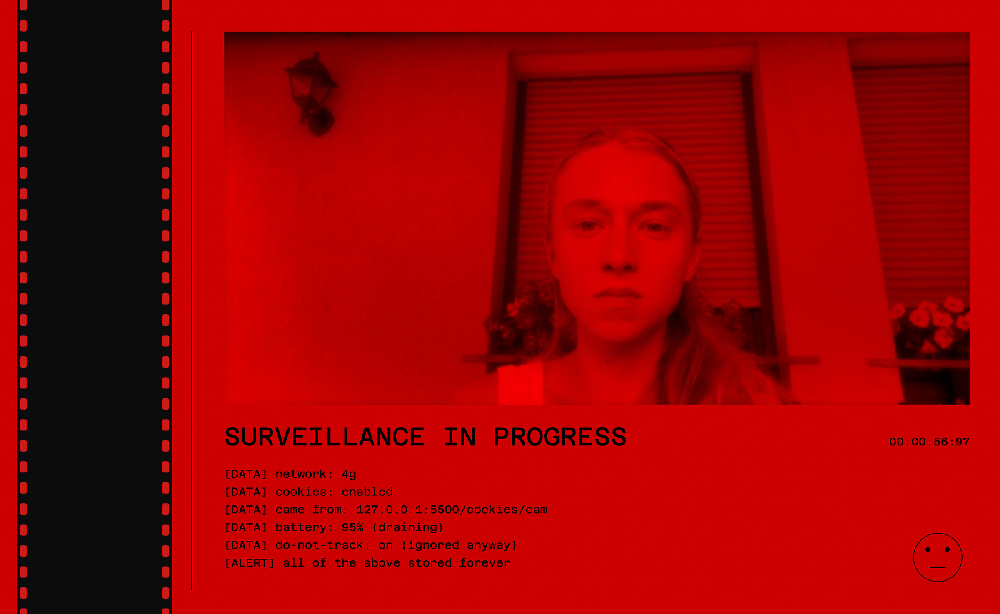

Cookies
Fall 2025
Interactive Web Art, P5.js

Concept
Cookies is a satirical web art piece about manipulation, and not only the kind that hides in cookie banners. It exposes the manipulative design patterns of cookie consent dialogs and online surveillance, while hinting at how the same tactics quietly reach beyond the screen. The project presents a seemingly familiar cookie consent modal where the Manage Settings button actively escapes the cursor using physics-based mouse avoidance, making it nearly impossible to click. This deliberately frustrating interaction mirrors how websites make it difficult to decline data collection. Once accepted, users are confronted with a surveillance interface featuring their own webcam feed processed in red duotone, fake surveillance messages, automatic screenshot capture, and an unsettling face that tracks mouse movement.
Underneath the satire it is really about manufactured consent and the illusion of choice: being watched while you believe you are in control, agreeing to terms you never actually read, and only noticing the cost once it is too late. Those are the same quiet patterns that run through manipulative relationships as much as manipulative interfaces, which is why the policy itself hides a more personal note for anyone patient enough to reach the very end.
Technical Implementation
Built with P5.js, the project implements sophisticated interaction mechanics including exponential force curves for realistic button escape behavior, real time webcam processing with duotone filtering, automatic screenshot capture and display, and mouse tracking for the interactive surveillance face. The button escape mechanism uses distance calculations and velocity dampening to create natural panic responses. The surveillance page captures webcam screenshots on click, displays them as grayscale thumbnails with timestamps, and processes the main camera feed with a custom duotone algorithm that maps luminance values between shadow and highlight colors.